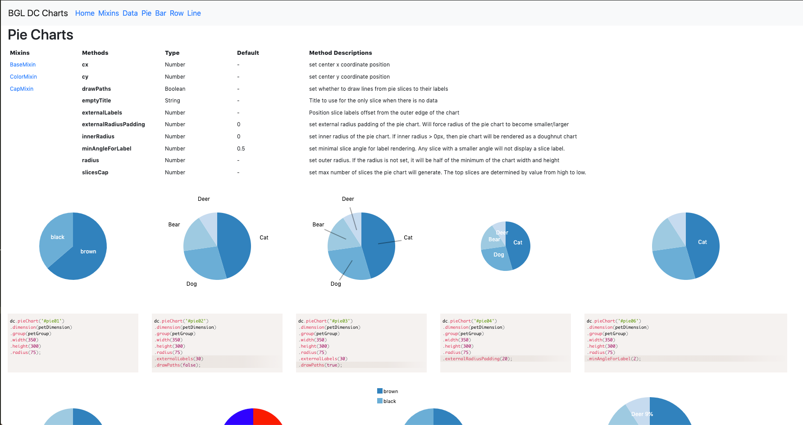
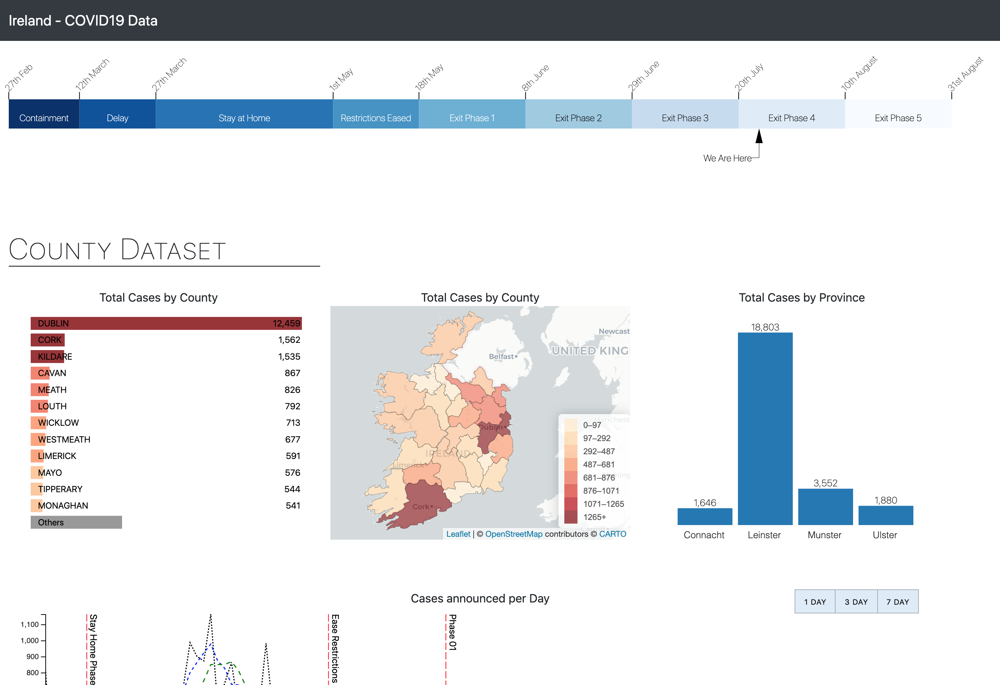
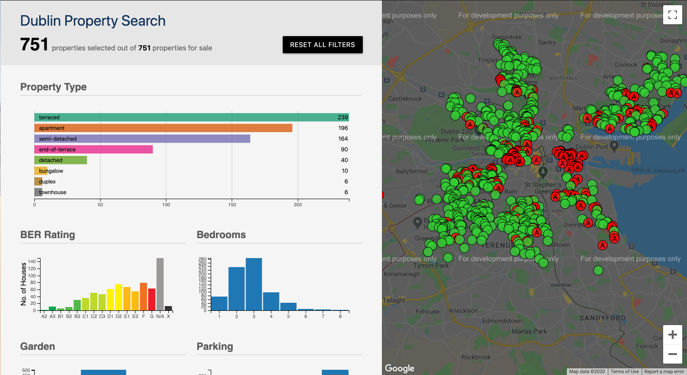

Data Science Project Setup - A Basic setup for data science projects
Python, Jupyter Notebook | 12-12-20
Python, Jupyter Notebook | 12-12-20
A simple, easy to use app for viewing planning applications in your locality.
It allows the user the ability to select a location of his choice(typically the user's home address), and
then view on a map, planning applications nearby.

 Django
Django PostGIS
PostGIS Google OAuth
Google OAuth Docker
Docker AWS S3
AWS S3 Travis CI
Travis CI Heroku
HerokuThis website gives a graphical representation of houses for sale in the form of an interactive data
dashboard.
It allows the user to filter on data points of interest to them.
The user can select data in one chart to apply a filter to all charts on the dashboard.

 Python
Python Beautiful Soup
Beautiful Soup dc.js
dc.js Bootstrap4
Bootstrap4 Github Pages
Github PagesProject Tracker is a simple, easy to use app for keeping track of small scale projects. It allows the user the ability to create project tasks and give each task a genre. Each task scan be given a time upon completion which is saved to the database and used for dashboard analysis.
Python Flask dc.js
Flask dc.js Materalize CSS
Materalize CSS sqlite3Heroku
sqlite3Heroku
 Google Maps API
Google Maps API Google Analytics
Google Analytics
 Siteground Hosting
Siteground HostingLibrary of dc.js code snippets with accompanying charts
 dc.js Netlify
NetlifyInteractive dashboard created using opensource data.
Dashboard is now only showing historic data stopping on July 25th
 dc.jsNetlifyData scraped from a popular property site using Java and Jsoup. Dashboard gives the user the ability to find a desired property by filtering the data by clicking on the charts.
Dashboard is now only showing historic data from August 2019
dc.jsGithub Pages